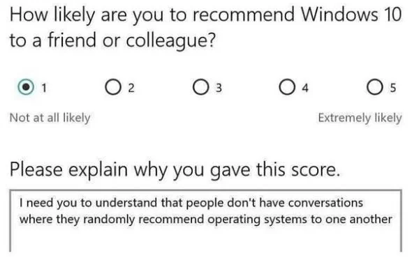
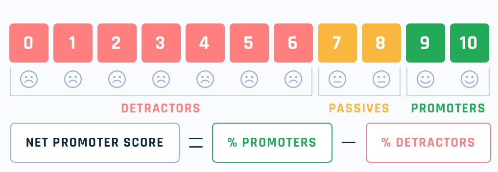

## Net Promoter Score - ## Not Proper data Science? <br> Seija Sirkiä · PyData Helsinki · June 2026
## About me - PhD in statistics 2007 - Academia-ish until 2017 - Counting trees - Maintaining R on a supercluster - Data scientist until 2022 - Consulting & product startups - Including HappySignals - Freelancer data engineer - Microsoft, OP Pohjola, Supercell
## "One Number You Need to Grow" *Harvard Business Review, 2003* > "…the single most reliable indicator of > a company's ability to grow." <br> <span class="dim">— Frederick Reichheld</span>


By
Bquast
-
Own work
,
CC BY 4.0
,
Link
## The NPS Formula 1. Ask: *"How likely are you to recommend us?"* (0–10) 2. Label respondents: Detractors (0–6) · Passives (7–8) · Promoters (9–10) 3. Compute: **NPS = %Promoters − %Detractors** <br> Result: a number between −100 and +100 <br> <span style="color: #e74c3c; font-weight: bold;">Not a percentage!</span>
## Not a percentage! - Consider: 65% yay, 15% boo, 20% meh - Result: 50, or 50%? - What is half of what here? - Consider: -15 - -15% implies a change or difference between two cases. What two? - Compare with CSAT: Actually the % of 4s and 5s out of 1 to 5
## Better calculation 1. Map: 0-6 → -1, 7-8 → 0, 9-10 → 1 2. Take the average (& multiply by 100) <br> - Easy to do in SQL or similar - Is actually a real *skewness* statistic - Since it is an average you can: - combine several by just weighting - use t-test to compare groups *but please don't*
## Recap - Asking people to rate their experience on a numerical scale: - sensible though ambiguous and unreliable - Summarising those answers as a single number: - essential - Claiming a certain scale and a certain statistic is magical: - dubious
## You need a benchmark - A single NPS score in isolation means *nothing* - Only difference to a *comparable* case means *something* - your past, your locales, your competitors - Comparability is rare because *anything* counts as *something* - Sampled populations shift too
## HappySignals benchmark data - NPS style survey after an IT support ticket is closed - Also Lost time, and Factors, and a Profile - Also metadata - Responses coming from global corporations, collectively operating all over the world - A clear country effect exists, creating a need for country benchmarks - Direct observation of pooled responses is unreliable
## Corrected country benchmark model - output var: 3-level multinomial - 2 input vars: country and company 1-hot encoded - linear prediction, logit link - calculate fits for Happiness (NPS) from the fitted multinomial probs
## Reparametrization - Standard methods for the fitted model give "predictions" (fits) for company S in country T - useful e.g. for a company to find where to improve - Country benchmark should be the fit for "an average company" - there is no such thing, the model object won't directly give that - Reparametrize manually!
## Interlude: Math! - Consider continuous output var Y and one 2-level categorical predictor X - i.e. group A and group B - The least squares predictions / fits for Y<sub>A</sub> and Y<sub>B</sub> is going to be....?
## Interlude: Math! - Consider continuous output var Y and one 2-level categorical predictor X - i.e. group A and group B - The least squares predictions / fits for Y<sub>A</sub> and Y<sub>B</sub> is going to be the average in each group - But you can parametrize your model in various ways
## Interlude: Math! - Y = α + βX<sub>B</sub> where X<sub>B</sub> is indicator fn for B - α becomes avg in A, β the difference between avgs - Y = β<sub>A</sub>X<sub>A</sub> + β<sub>B</sub>X<sub>B</sub> - βs become the avgs directly - Y = α + βX<sub>A</sub> - βX<sub>B</sub> - α becomes the midpoint between the avgs - my "average" case!
## Anecdote 1: shift left - shift left here means moving routine tasks to "tier 0" support, i.e. outside the ticketing system - like password resetting - password resets are common, and easy to solve nice and fast - good experience! - What happens to your NPS if you pull this off? - and what to the quality of your service?
## Anecdote 2: A natural experiment - There are two types of tickets: incidents and requests - They have almost identical surveys, except incidents have a factor "my ticket was not solved" - One (major) client misconfigured their integration and requests also got this option - Guess if people feel that requests can go unsolved?
## Anecdote 3: Robot clicks! - Sidenote: "why are you data people so keen on batching??" - Emails are scanned to catch malicious content before they hit the inbox - This means the score buttons (links) are clicked by a robot, not the intended human - We sort this problem by adding buttons only a robot would click
## Anecdote 4: "More smiles, less time wasted" - The survey also asks for Lost Time - This is the money maker, actually - Clearly correlates with Happiness - Sales wanted to know *how much* Lost Time goes down as Happiness improves - "Uhhh.... 40 minutes per ticket per point (per year)?"
linkedin.com/in/seija/ <br> github.com/seijasirkia/talk_about_nps